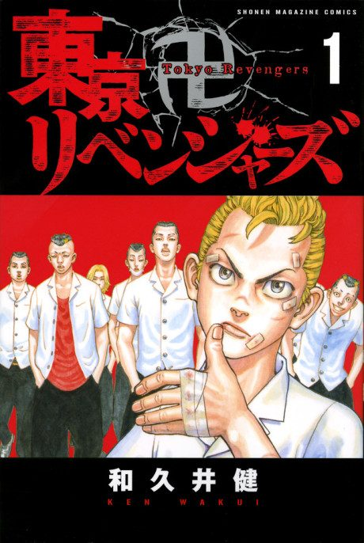

Animeter
 Anime
Anime
MangaTokyo Revengers
Arcs
Episodes numbered continuously across all seasons (Season 2 starts at 25, Season 3 at 38, Season 4 at 51), as on Wikipedia and Anime Filler Guide.
Toman Arc
Down-on-his-luck Takemichi Hanagaki learns his middle-school girlfriend Hinata was killed in a gang conflict, then finds himself thrown back twelve years into his own past.
Moebius Arc
Takemichi tries to stop the event he believes sets Toman on its dark path: a fight with the rival gang Moebius.
Valhalla Arc
Takemichi joins Toman and races to prevent a rift between Mikey and his friend Baji ahead of the Bloody Halloween battle with Valhalla.
Christmas Showdown Arc
In a new future Toman is still a criminal empire, so Takemichi goes back to deal with the Black Dragons and the Shiba siblings.
Tenjiku Arc
Toman faces Tenjiku, a powerful gang led by Izana Kurokawa, in the Kanto Incident.
War of the Three Titans Arc
Season 4 premiered in October 2026 and adapts the manga's final arcs (still airing as of mid-October 2026).